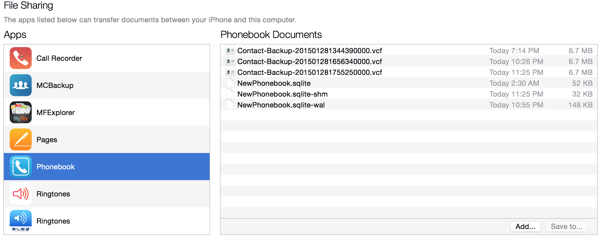

We have listed below some of the frequently asked questions for your reference. If these do not solve your problem, feel free to Contact us or leave a feedback.
You can access your backups from iTunes using the Apple File Sharing. (See apple help article on iOS: About File Sharing.)
In iTunes, Select your iOS device from the Devices section of iTunes.Click the Apps tab and scroll down to the bottom of the page. 
Under the file Sharing section in iTunes, find "Phonebook". Your backup files will be listed on the right hand side.
In iTunes, Select your iOS device from the Devices section of iTunes.Click the Apps tab and scroll down to the bottom of the page.
Under the file Sharing section in iTunes, find "Phonebook". Add your backup file (*.vcf) using the Add.. button.
Open the NewPhonebook app on your iPhone and go to Tools->Restore Contacts->Restore from Phone. It will prompt you to select the backup file.
NewPhonebook will upload all backups to your Google Drive Root Folder. For restoration, your backup should be located in the root folder and also have a .vcf file extension.
NewPhonebook will upload all backups to your Dropbox account at Apps/newphonebook. For restoration, your backup should be located in the same folder and also have a .vcf file extension.